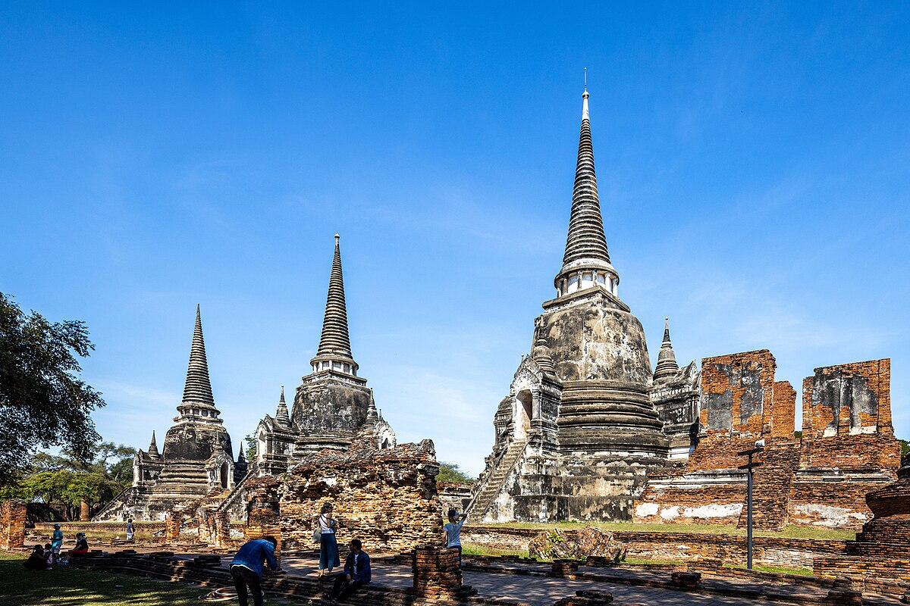

วัดพระศรีสรรเพชญ์
วัดสำคัญในสมัยอยุธยาที่มีเจดีย์ใหญ่และสถาปัตยกรรมที่งดงาม
พระนครศรีอยุธยาเป็นจังหวัดหนึ่งในภาคกลางและเป็นเขตเศรษฐกิจอุตสาหกรรมที่สำคัญ โดยมีผลิตภัณฑ์มวลรวมของจังหวัดมีมูลค่าสูงเป็นอันดับ 3 ของประเทศ และมีประวัติศาสตร์ความเป็นมาที่ยาวนาน เคยมีชื่อเสียงเป็นแหล่งปลูกข้าวที่สำคัญ จังหวัดพระนครศรีอยุธยาเป็นจังหวัดเดียวในประเทศไทยที่ไม่มีอำเภอเมือง แต่มี อำเภอพระนครศรีอยุธยา เป็นศูนย์กลางการบริหารจัดการด้านต่าง ๆ ชาวบ้านโดยทั่วไปนิยมเรียกอีกชื่อว่า "กรุงเก่า" หรือ "เมืองกรุงเก่า" ห่างจากกรุงเทพมหานครประมาณ 75 กิโลเมตร สถานที่ท่องเที่ยวที่นี่เต็มไปด้วยโบราณสถานที่งดงาม และสะท้อนถึงความรุ่งเรืองในอดีตของอาณาจักรอยุธยา
วัดสำคัญในสมัยอยุธยาที่มีเจดีย์ใหญ่และสถาปัตยกรรมที่งดงาม
วัดมหาธาตุเป็นพระอารามหลวง ตั้งอยู่ใกล้วัดราชบูรณะ ในบริเวณอุทยานประวัติศาสตร์พระนครศรีอยุธยา
วัดที่มีความงดงามและได้รับการอนุรักษ์อย่างดี
พระราชวังที่สวยงาม มีทั้งสถาปัตยกรรมไทยและยุโรป
โบราณสถานสำคัญของเมืองหลวงเก่าแห่งนี้